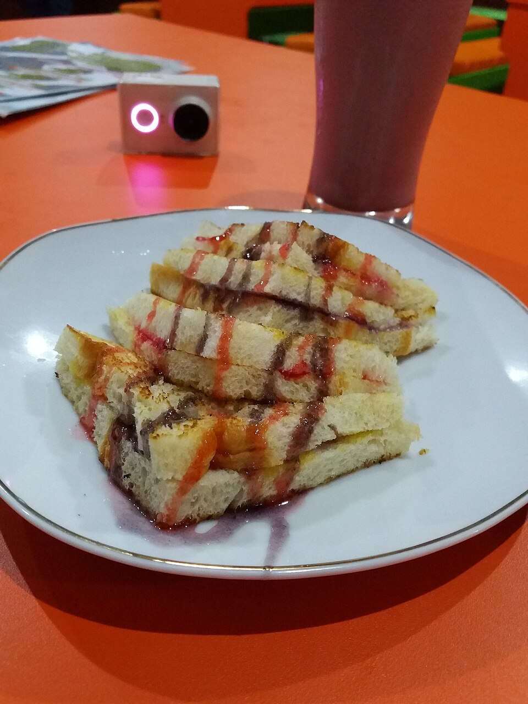

Resep Roti Bakar Bandung

Garis Besar
- Waktu Persiapan : 10 menit
- Waktu Istirahat : Tidak ada
- Waktu Memasak : 10 menit
- Tingkat Kesulitan: Sangat Mudah
- Porsi : 1 porsi besar (1 balok roti)
Bahan-Bahan
Bahan Utama:
- 1 balok roti khusus roti bakar (bisa diganti 4 lembar roti tawar tebal)
- 3 sdm margarin atau mentega (untuk olesan dalam dan luar)
Bahan Topping Isian:
- 4 sdm meises cokelat berkualitas
- 50 gram keju cheddar, diparut
- 3 sdm susu kental manis putih
Instruksi Memasak
- Mempersiapkan Roti: Potong balok roti menjadi dua atau tiga bagian secara horizontal (jangan sampai putus di satu sisi agar bisa dilipat). Jika menggunakan roti tawar biasa, siapkan dua pasang lembaran.
- Mengoleskan Margarin Dasar: Olesi bagian dalam roti dengan margarin secara merata ke seluruh permukaan.
- Memberi Isian: Taburkan meises cokelat dan keju parut di atas permukaan yang sudah diolesi margarin. Kucurkan susu kental manis secara merata di atasnya, lalu tangkupkan atau lipat kembali roti tersebut.
- Mengoleskan Margarin Luar: Olesi permukaan luar roti (bagian atas dan bawah) dengan margarin yang cukup tebal agar hasil bakaran menjadi renyah dan berwarna cokelat keemasan.
- Memanaskan Wajan: Panaskan wajan datar atau teflon anti lengket dengan api sedang cenderung kecil. Anda bisa menambahkan sedikit margarin lagi di atas wajan.
- Memanggang Roti: Taruh roti di atas wajan panas. Panggang hingga bagian bawahnya berwarna cokelat keemasan dan renyah, lalu balik roti untuk memanggang sisi satunya. Tekan sedikit dengan spatula agar panasnya merata dan isian di dalamnya meleleh.
- Penyajian: Angkat roti bakar yang sudah matang. Potong menjadi beberapa bagian kecil selagi hangat, lalu sajikan di atas piring. Anda bisa menambahkan ekstra parutan keju atau kucuran susu kental manis di atasnya jika suka.
Pro Tips Agar Roti Bakar Renyah dan Lembut
- Gunakan Api Kecil: Selalu gunakan api sedang cenderung kecil saat memanggang agar bagian luar roti bisa renyah perlahan tanpa gosong, sementara keju dan cokelat di bagian dalam sempat meleleh dengan sempurna.
- Olesan Margarin yang Royal: Jangan pelit saat mengoleskan margarin di bagian luar roti. Margarin inilah yang memberikan tekstur kriuk (*crispy*) yang gurih dan aroma harum khas abang-abang penjual roti bakar jalanan.